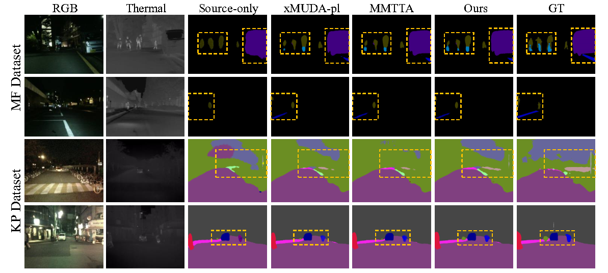

Test-Time Adaptation for Nighttime Color-Thermal Semantic Segmentation
-
Yexin Liu
AI Thrust, HKUST(GZ)
ARC Lab, Tencent PCG -
Weiming Zhang
AI Thrust, HKUST(GZ)
-
Guoyang ZHAO
Robotics and Autonomous Systems Thrust, HKUST(GZ)
-
Jinjing Zhu
AI Thrust, HKUST(GZ)
-
Athanasios V. Vasilakos
Center for AI Research (CAIR), University of Agder(UiA)
-

Addison Lin Wang
AI Thrust, HKUST(GZ)
Dept. of CSE, HKUST
Abstract
The ability to scene understanding in adverse visual conditions, e.g., nighttime, has sparked active research for color-thermal semantic segmentation. However, it is essentially hampered by two critical problems: 1) the day-night gap of color images is larger than that of thermal images, and 2) the classwise performance of color images at night is not consistently higher or lower than that of thermal images. We propose the first test-time adaptation (TTA) framework, dubbed Night-TTA, to address the problems for nighttime color-thermal semantic segmentation without access to the source (daytime) data during adaptation. Our method enjoys three key technical parts. Firstly, as one modality (e.g., color) suffers from a larger domain gap than that of the other (e.g., thermal), Imaging Heterogeneity Refinement (IHR) employs an interaction branch on the basis of color and thermal branches to prevent cross-modal discrepancy and performance degradation. Then, Class Aware Refinement (CAR) is introduced to obtain reliable ensemble logits based on pixel-level distribution aggregation of the three branches. In addition, we also design a specific learning scheme for our TTA framework, which enables the ensemble logits and three student logits to collaboratively learn to improve the quality of predictions during the testing phase of our Night TTA. Extensive experiments show that our method achieves state-of-the-art (SoTA) performance with a 13.07% boost in mIoU.
Dataset
MF dataset. It contains 1569 images (784 for training, 392 for validation, and 393 for test) in which 820 daytime and 749 nighttime images are mixed in training, validation, and test sets. The resolution of images is 480x640 with annotated semantic labels for 8 classes. To evaluate our method, we just drop out the nighttime color-thermal image pairs in the original training and validation sets and drop out the daytime color-thermal image pairs in the original test sets to form a new dataset (410 for training, 205 for validation, and 188 for test), which is denoted as MF-1. For UDA methods, under our investigation, there only two UDA methods (HeatNet and MS-UDA) for nighttime image semantic segmentation leveraging color and thermal images. Thus, we compare the segmentation performance with these two methods. For a fair comparison, we use the same training and testing set with MS-UDA: We reorganize the daytime and nighttime images in the MF dataset as training and testing sets (820 daytime images for training and 749 nighttime images for testing ), which is denoted as MF-2. Three categories of labels overlapping the KP dataset (car, person, and bike) are used for evaluation.
Approach
Overview of the Night-TTA framework, which consists of Color, Thermal, and Interaction branches (students). Importantly, we propose Image Heterogeneity Refinement (IHR) and Class Aware Refinement (CAR). The IHR employs an interaction branch with a CMSA module to maintain the shared information to ensure reliable predictions for either color or thermal branch.
The CAR is buttressed by the EEF module to generate more reliable ensemble logits (teacher) to learn the discriminative feature of each class in color-thermal modalities. We also propose the training and testing schemes of our TTA framework.
Demo with Our Method
Results on the benchmark dataset
BibTeX
@article{liu2023test,
title={Test-Time Adaptation for Nighttime Color-Thermal Semantic Segmentation},
author={Liu, Yexin and Zhang, Weiming and Zhao, Guoyang and Zhu, Jinjing and Vasilakos, Athanasios and Wang, Lin},
journal={arXiv preprint arXiv:2307.04470},
year={2023}
}